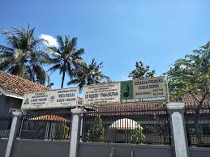
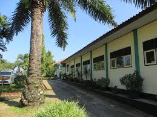

Tentang Saya
Hallo Perkenalkan saya Restu Hidayat lahir pada 23 Desember 2002 di Banyumas Sekarang saya adalah mahasiswa Amikom Purwokerto Jurusan Teknologi Informasi
Pendidikan
Berikut adalah riwayat pendidikan saya:

SD Negeri 1 Panusupan
Pendidikan dasar di SD Negeri 1 Panusupan, lulus pada tahun 2015.

SMP PGRI 2 Cilongok
Pendidikan menengah pertama di SMP PGRI 2 Cilongok, lulus pada tahun 2018.
SMK Wiworotomo Purwokerto
Pendidikan kejuruan di SMK Wiworotomo Purwokerto , lulus pada tahun 2021, Jurusan Teknik Komputer dan Jaringan.

Universitas Amikom Purwokerto
Pendidikan S1 di Universitas Amikom Purwokerto dari tahun 2021